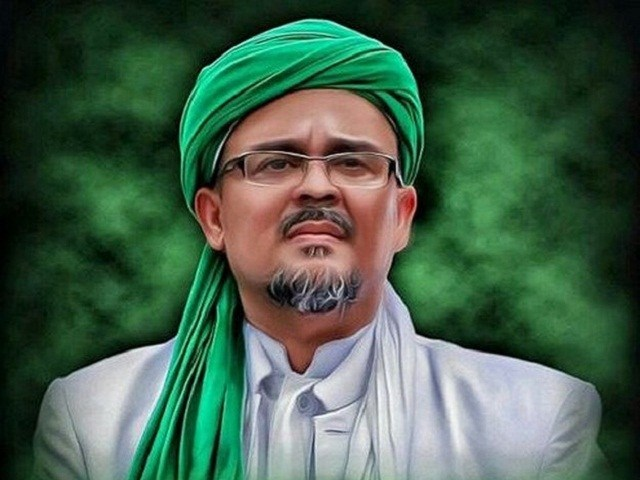

Drs.Al-Habib Rizieq Shihab Lc,Ma |
|
Rizieq Shihab adalah anak tunggal. Ia lahir di Jakarta pada tanggal 24 Agustus 1965 dari pasangan Habib Hussein bin Muhammad Shihab dan Sidah Alatas.[4] Kedua orangtuanya merupakan orang Betawi keturunan Hadhrami.[5] Ayahnya, Husein bin Muhammad bin Husein bin Abdullah bin Husein bin Muhammad bin Shaikh bin Muhammad Shihab (lahir sekitar 1920)[6] adalah salah seorang pendiri Gerakan Pandu Arab Indonesia yang didirikan bersama teman-temannya pada tahun 1937.[7] Pandu Arab Indonesia adalah sebuah perkumpulan kepanduan yang didirikan oleh orang Indonesia berketurunan Arab yang berada di Jakarta, yang selanjutnya berganti nama menjadi Pandu Islam Indonesia (PII).[5] Ayahnya wafat pada tahun 1966 saat Rizieq berusia 11 bulan, sehingga sejak saat itu ia hanya diasuh oleh ibunya, Syarifah Sidah, dan tidak dididik di pesantren. Baru setelah berusia empat tahun ia mulai rajin mengaji di masjid-masjid dekat rumahnya. Sebagai orang tua tunggal, ibunya yang bekerja sebagai penjahit pakaian dan perias pengantin juga sangat memperhatikan pendidikan Rizieq serta membimbingnya dengan pendidikan agama. |
To understand the example better, we have added borders to the table.